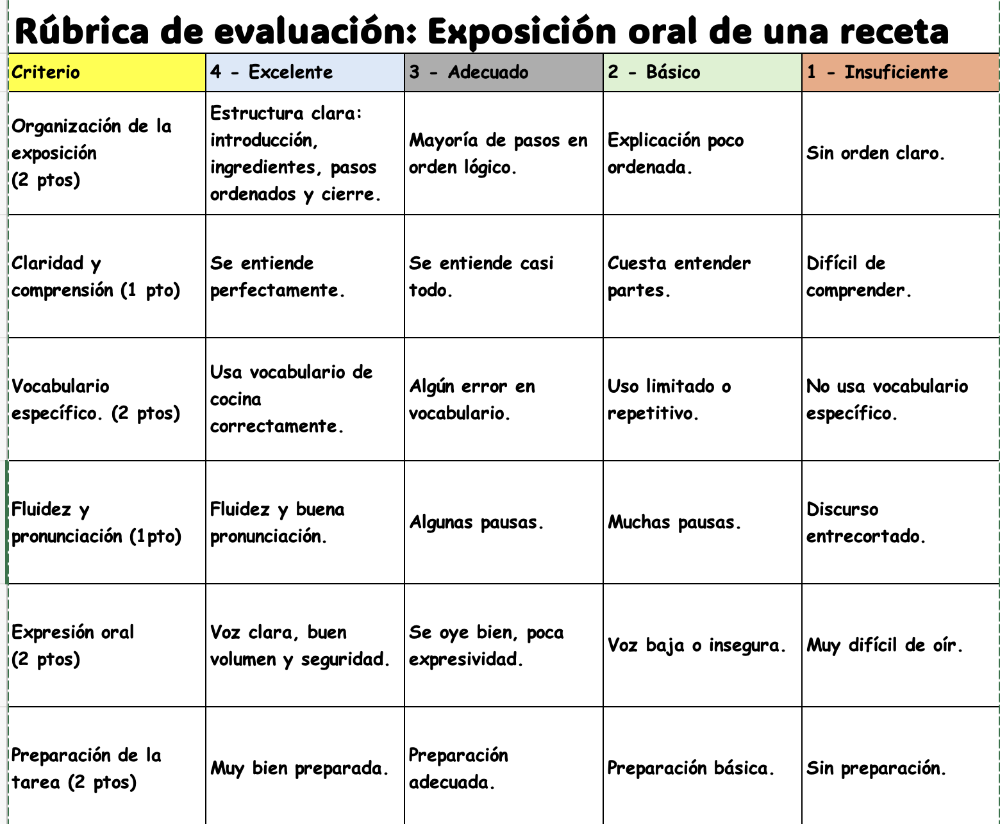

Rúbricas de evaluación
Esta rúbrica se utilizará durante las grabaciones en vídeo, realizando la receta; recopilándose así las observaciones del trabajo del alumnado. Los datos se registrarán en una hoja de seguimiento, permitiendo hacer un análisis detallado de la expresión oral y el trabajo realizado.
De esta forma, el alumnado será evaluado en función de las observaciones hechas por el docente durante la explicaciones de los pasos llevados a cabo en la elaboración de la receta.
Se espera que la rúbrica ofrezca una visión clara del desarrollo individual del alumnado, destacando áreas de mejora y puntos fuertes. Más allá de la calificación, los resultados permitirán ajustar las actividades en función del progreso colectivo, favoreciendo la creación de estrategias de intervención en caso de detectar aspectos donde los alumnos necesiten refuerzo.
A continuación puedes ver la rúbrica de evaluación:

Rúbrica creada por la autora con EXCEL.
Cada uno de estos criterios se evaluará en una escala de cinco niveles ―de insuficiente a sobresaliente―, permitiendo una valoración precisa del progreso del alumno en cada aspecto. La rúbrica estará a disposición del alumnado antes, durante y después de la grabación del vídeo.